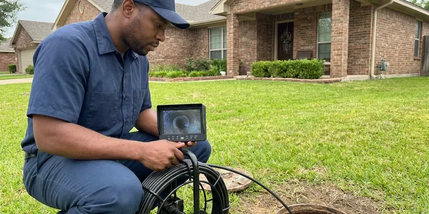

Commercial Plumbing in Wilmington Manor, DE
For all your business's plumbing needs in Wilmington Manor, DE, GNV Plumbing provides complete commercial plumbing services.
- Maintenance Plans Available
- Licensed & Insured
- Clear Pricing
- Transparent Pricing

Need Commercial Plumbing Service in Wilmington Manor, DE?
Contact us for expert plumbing solutions matched to your commercial property's unique requirements.
Top-Rated Commercial Plumbing Services in Wilmington Manor, DE
GNV Plumbing specializes in complete commercial plumbing services tailored for businesses across Wilmington Manor, DE. We understand that commercial plumbing systems are complex and essential to your daily operations, requiring specialized tools and expertise beyond residential work.
Our expertise includes:
- Large-scale water heater repair and replacement
- Backflow prevention device testing and repair
- Commercial drain clearing and hydro-jetting

Additional Plumbing Maintenance Services in Wilmington Manor, DE
Our maintenance and specialty plumbing services in Wilmington Manor, DE protect your home year-round and extend the life of every system.


Customers
Why Choose GNV Plumbing for Commercial Plumbing in Wilmington Manor, DE?
We know that downtime means lost revenue, which is why GNV Plumbing focuses on swift and lasting repairs for your commercial plumbing needs.
- 24/7 Availability, Commercial plumbing emergencies don't wait for business hours, so neither do we. Our team is on call to handle critical issues anytime.
- Code Compliant, Our work satisfies commercial plumbing, backflow and health department requirements.
- Business Continuity, We ensure minimal disruption to your commercial operations with prompt service and lasting repairs.
Citywide Coverage
Property managers rely on us across Wilmington Manor and nearby areas for single buildings and multi-site portfolios. We coordinate access, keys and tenant notices to keep things running smoothly.
Experienced Team
Each member of our GNV Plumbing commercial plumbing crew is licensed and insured, bringing years of hands-on experience to every job. We ensure our team stays updated on the latest commercial plumbing technologies and Delaware codes to provide top-quality service.
Safety-First Approach
We follow commercial plumbing codes, backflow requirements and health department rules for food service sites. Our crews use lockout procedures and proper confined space practices where required.
Trusted Certified Wilmington Manor Plumbing Services Professionals
At GNV Plumbing, we take pride in providing licensed, certified plumbing services throughout Wilmington Manor, DE. Backed by leading industry credentials, our experienced plumbers combine technical skill with genuine customer care. Whether it is repair, installation, or maintenance, we follow strict safety and quality standards to deliver long-lasting results you can trust.
Call Us Now PHCC Plumbing Contractor Recognition
PHCC Plumbing Contractor Recognition Better Business Bureau (BBB) Accreditation
Better Business Bureau (BBB) Accreditation Angi Certified Pro
Angi Certified Pro ISO 9001 Quality Management Certification
ISO 9001 Quality Management CertificationReliable Commercial Plumbing Services in Wilmington Manor, DE
Emergency Commercial Plumbing in Wilmington Manor
A plumbing emergency can stop business operations, leading to lost revenue and potential property damage. GNV Plumbing offers fast-response emergency commercial plumbing services throughout Wilmington Manor, DE. Whether it's a major burst pipe, a severe sewage backup, or a critical water heater failure, our team is equipped to handle urgent situations 24/7. We arrive promptly, assess the problem, and implement immediate solutions to limit damage and restore functionality, helping your business get back on track with minimal downtime.

Commercial Water Heaters and Boilers in Wilmington Manor, DE
Commercial kitchens, gyms and multi-family buildings need large amounts of hot water. We service and install high-input tank water heaters, tankless racks and boiler-fed systems with storage tanks. Water in Delaware ranges from moderately soft to hard depending on the source, and groundwater areas often see more mineral buildup on fixtures. Mineral scale can build up in these systems quickly, so we offer descaling and flushing on a schedule. We also install mixing valves to deliver safe temperatures at hand-washing sinks.
Multi-Family and Property Management Plumbing in Wilmington Manor
Apartment complexes and HOAs need a plumber who can handle many units and fast turns. We repair leaks, replace water heaters, clear stacks and repipe buildings while keeping residents informed. Property managers get consistent pricing and detailed invoices for each unit. We also help plan capital projects like building-wide repipes.
Commercial Restroom Fixture Service in Wilmington Manor, DE
Maintaining functional and hygienic restrooms is essential for any commercial establishment in Wilmington Manor, DE. GNV Plumbing provides complete services for commercial restroom fixtures, including repair and replacement of toilets, urinals, sinks, and automatic faucets. We address common issues like persistent leaks, clogs, and low water pressure, ensuring your commercial restrooms are always in excellent working order for your patrons and employees.
Commercial Leak Detection & Repair in Wilmington Manor, DE
Even small leaks in a commercial setting can lead to significant water damage, mold growth, and high utility bills. GNV Plumbing utilizes advanced leak detection technology, such as acoustic sensors and thermal imaging, to pinpoint hidden leaks in walls, ceilings, and underground pipes without destructive exploration. Once located, our experienced plumbers perform efficient and durable repairs to restore the integrity of your commercial plumbing system in Wilmington Manor, DE.
Fixture and Faucet Repair & Replacement in Wilmington Manor, DE
High-traffic commercial restrooms and kitchens in Wilmington Manor often feature robust, heavy-duty fixtures and faucets designed for durability but still susceptible to wear and tear. We specialize in repairing and replacing commercial-grade fixtures, including sensor-operated faucets, industrial sinks, and commercial toilets. Our team makes sure of proper installation and recommends durable, water-efficient models that can withstand the demands of a commercial environment, helping to reduce water waste and maintenance costs over time. We work with brands like Sloan, Chicago Faucets, and T&S Brass.
Backflow Prevention Device Services in Wilmington Manor
Backflow prevention devices are essential for protecting the public water supply from contamination, a serious concern for commercial properties in Wilmington Manor. Most water providers require annual testing and certification of these devices. Our certified plumbers provide comprehensive testing, repair, and installation of backflow preventers, helping your business stay compliant and safe. We handle all types, including reduced pressure zone (RPZ) assemblies and double check valve assemblies, which are common in commercial and industrial applications. Keeping these devices in good working order is a basic safety measure.

Tenant Improvement and Build-Out Plumbing in Wilmington Manor, DE
When a space changes hands, the plumbing often needs to change too. We install new restrooms, break rooms, mop sinks and kitchen fixtures for tenant improvements. Our team works from your plans, coordinates with general contractors and passes inspections on time. We also cap and abandon old lines correctly.
Expert Commercial Plumbing Near Me in Wilmington Manor, DE
When you search for 'commercial plumbing near me' in Wilmington Manor, DE, GNV Plumbing is the dependable local expert ready to serve your business. Our proximity and understanding of local commercial properties mean faster response times and plumbing solutions suited to the specific challenges faced by businesses in our area. We are committed to being your dependable, nearby commercial plumbing partner.
We are dedicated to providing quick and efficient commercial plumbing solutions across Wilmington Manor, DE. Our technicians are strategically dispatched to ensure quick response times, minimizing disruptions to your business. Trust GNV Plumbing to be your accessible, go-to commercial plumbing expert, ready to serve your property with skill and precision.
GNV Plumbing at a Glance
- Fully licensed plumbing team covering Wilmington Manor, DE
- Same-day appointments and 24/7 emergency response
- Clear written estimates, no hidden fees
- 4.8-star rated by 849+ Delaware customers
Wilmington Manor Map
Wilmington Manor Information
- Population
- 8,162
- Area codes
- Local
- Service area
- Wilmington Manor and communities within 40 miles
- Nearby
- New Castle, Elsmere, Wilmington, Edgemoor
For businesses in Wilmington Manor, DE, commercial plumbing handles far more daily use than a home system, so it needs sturdy parts and regular care. Salt air in coastal parts of Delaware speeds corrosion on outdoor fittings, hose bibs, and exposed metal pipe.
Expert Services
Trust our professionals for reliable GNV Plumbing solutions in Wilmington Manor, DE.
Our Specialized Plumbing Services in Wilmington Manor, DE
At GNV Plumbing, we provide a complete range of plumbing services across Wilmington Manor, DE. From leak detection to full system installations, our team ensures fast, precise, and affordable service for both residential and commercial properties. Explore our core services below:


How Our Commercial Plumbing Process Works in Wilmington Manor, DE
We follow a clear, organized approach to make sure every commercial plumbing job is handled with professionalism and precision.
Request a Quote
Call (302) 406-6354 and tell us about your property and the problem or project. We schedule a plumber or estimator at a time that fits your operation.
Assess and Propose
We inspect the system, explain options and provide a written proposal. You approve the work before we begin.
Complete and Document
We finish the work with minimal disruption and test everything. You get invoices, photos and any compliance reports for your records.
Frequently Asked Questions About Commercial Plumbing in Wilmington Manor
Service calls for small commercial repairs often run $200 to $600, and larger projects are quoted individually. Backflow tests usually cost $75 to $175 per device.
GNV Plumbing services and installs all major brands of commercial water heaters common in Delaware, including AO Smith, Rheem, Bradford White, and State Water Heaters. Our technicians are trained on the latest models and technologies to provide efficient and reliable hot water for your business.
Yes, many commercial plumbing projects in Wilmington Manor, especially installations, major repairs, or system upgrades, require permits from the local building department. This ensures the work meets safety and code standards. GNV Plumbing handles all necessary permitting steps to make sure your commercial plumbing work is fully compliant with local regulations.
Yes, GNV Plumbing understands that plumbing emergencies can happen anytime and severely impact your business operations. We offer 24/7 emergency commercial plumbing services throughout Wilmington Manor, DE. You can call us anytime, day or night, and we will dispatch a technician to address your urgent plumbing issue promptly.
For most businesses in Wilmington Manor, we recommend a comprehensive commercial plumbing inspection at least once a year. High-traffic establishments like restaurants or manufacturing plants might benefit from quarterly inspections to prevent major problems and ensure compliance with health and safety regulations.
Hydro-jetting is a powerful drain cleaning method that uses high-pressure water streams to thoroughly clear commercial pipes of blockages, grease buildup, and debris. It's very effective for commercial kitchens and other businesses in Wilmington Manor that accumulate significant FOG (fats, oils, and grease), providing a much more complete clean than traditional snaking.
Yes, we offer plans covering backflow testing, drain jetting, water heater flushing and fixture inspections. Contracts help control costs and head off emergencies.
GNV Plumbing stands behind the quality of our commercial plumbing work. We offer a solid warranty on both parts and labor for all services performed. The specific terms of the warranty will be clearly outlined in your service agreement, providing peace of mind for your investment.
What People Are Saying About Our Plumbing Experts?

Robert G.
The trenchless sewer replacement saved our front yard. They walked us through the camera inspection footage first so we knew exactly what we were paying for.
Sewer Line Replacement · Wilmington, DE
Daniel K.
A pipe burst at 11 pm and they actually answered. The plumber showed up within the hour, shut everything down, and had us back to normal the next morning. Could not ask for more.
Emergency Plumbing · Edgemoor, DE
Laura S.
I scheduled a water heater replacement, and the team made the process smooth and affordable. The new unit works perfectly, and they cleaned up after completing the job.
Water Heater Replacement · Pike Creek Valley, DE
Mark T.
When our office needed drain cleaning, GNV Plumbing provided quick, reliable service. The plumber arrived on time and made sure every drain flowed perfectly before leaving. Very satisfied.
Drain Cleaning · Wilmington, DEJames P.
Our commercial plumbing system had a leak under the sink, and GNV Plumbing handled it professionally. The plumbers arrived quickly and restored everything without disruption to our customers.
Commercial Plumbing · Elsmere, DE
Emily R.
I called GNV Plumbing for plumbing repair, and the technician was fast, polite, and thorough. They explained the problem clearly and fixed it the same day. I will definitely hire them again. Highly recommended!
Plumbing Repair · Elsmere, DE